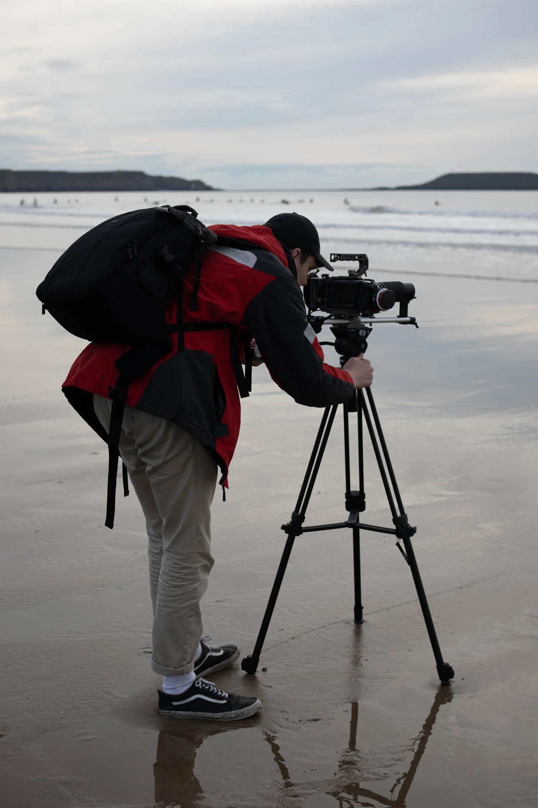
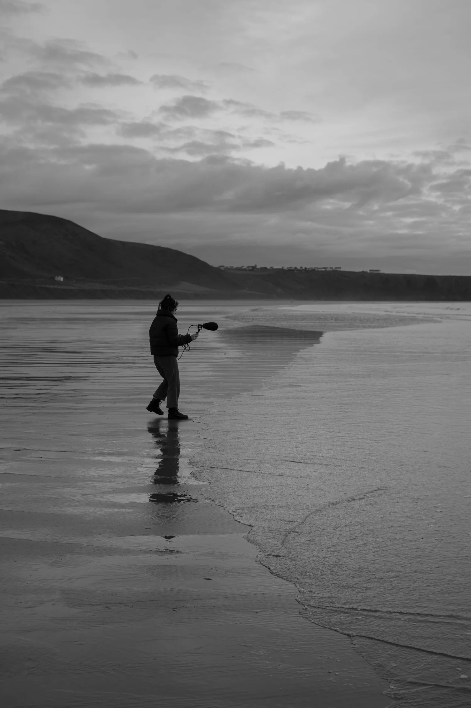
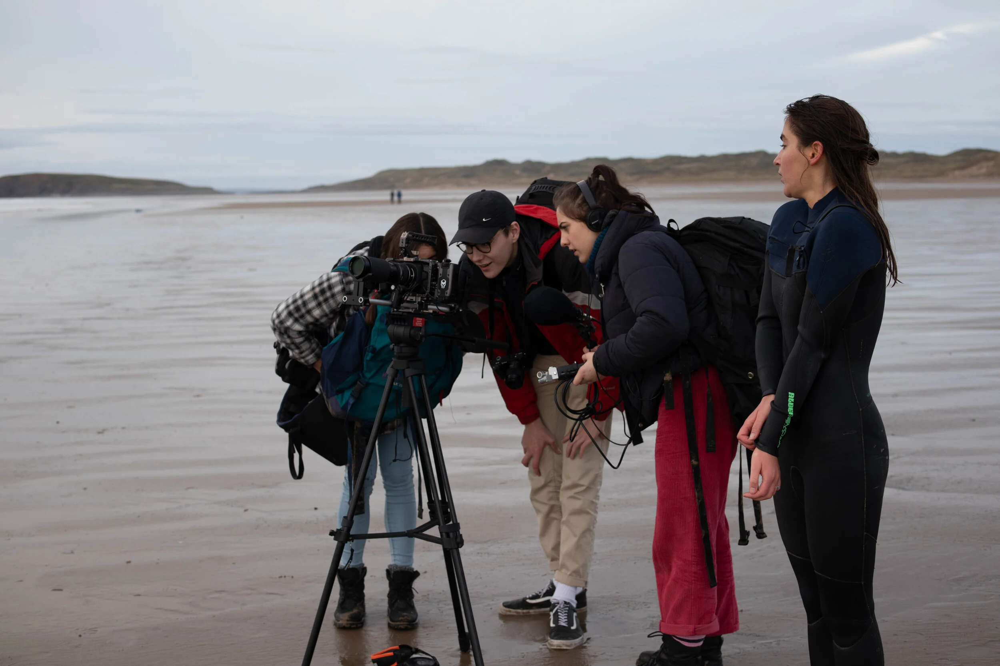
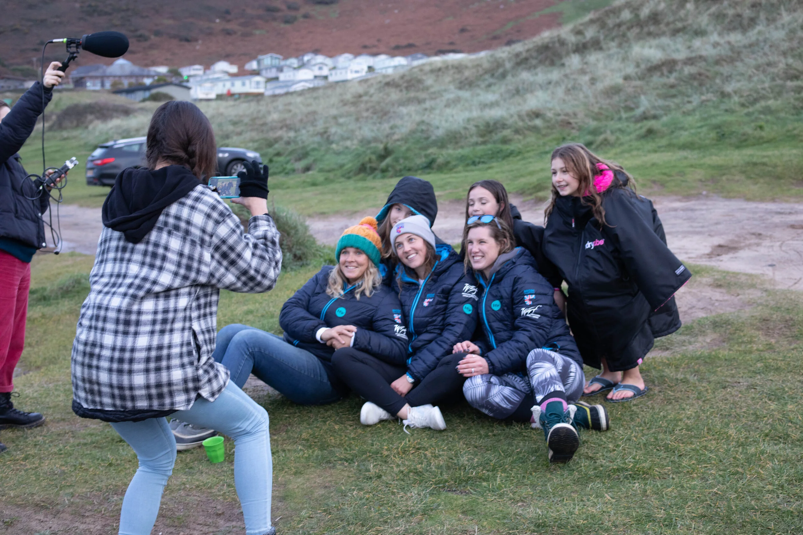

Down Gwyr
Down Gŵyr is a short documentary that explores the representation of women in sport from the perspectives of several generations of female surfers.
As Camera Assistant for this project it was my responsibility to manage a multi-camera workflow and ensure that all technical challenges were dealt with ahead of time to so that we could capture as much of the day’s events as possible.
As sole editor for this project I was tasked with organising and compiling several hours worth of footage into a 10 minute film. Through this project I developed my own filing systems to keep all project assets easily manageable and created transcripts of interviews to help in planning the films final structure.
Finally as colourist for this project I was challenged to take footage from multiple formats (10-bit BM RAW and 8-bit XAVC) and create a consistent final grade.



